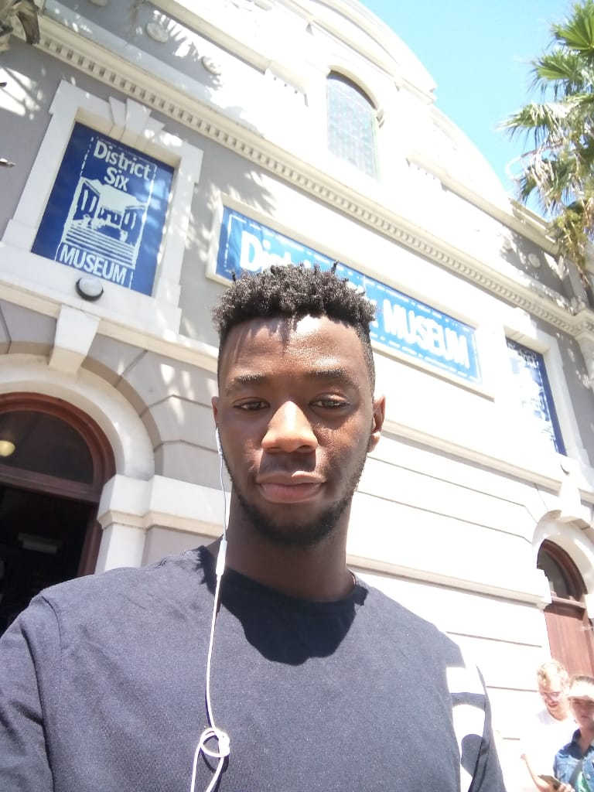
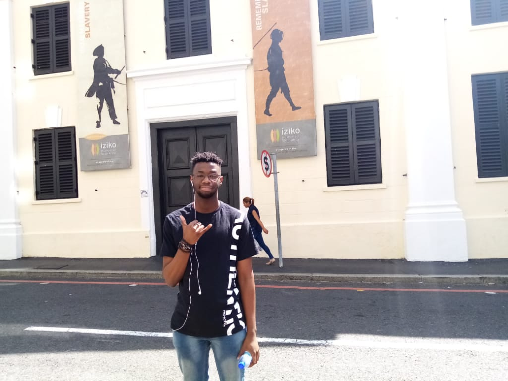
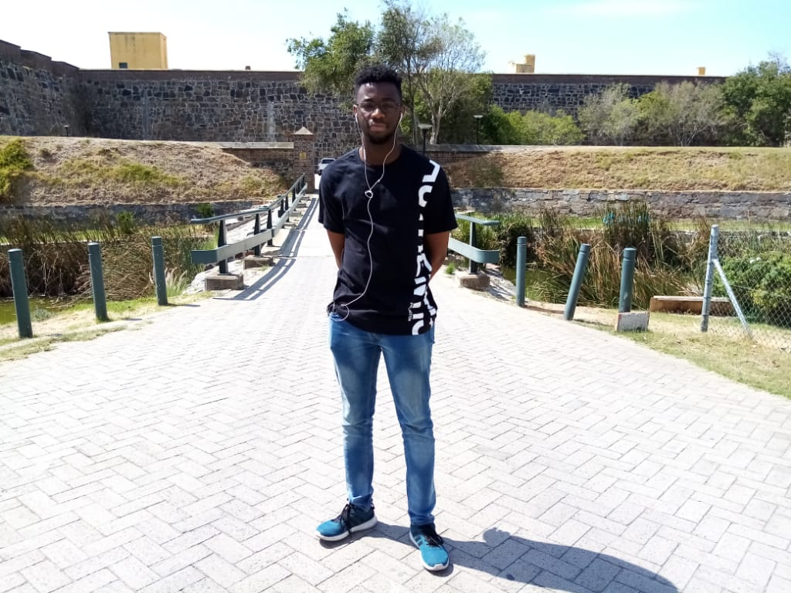

Historic Places In Cape Town
District 6 Muesum

District Six Museum is a museum in the former inner-city residential area and, District Six, in Cape Town,
South Africa in an old Methodist church.
District Six Foundation was founded in 1989 and the museum in 1994, as a memorial to the forced movement of
60,000 inhabitants of various races in District Six during Apartheid in South Africa in the 1970s
Slave Lodge

The Slave Lodge is one of the oldest buildings in Cape Town. The building has answered to many names in the
last three centuries, namely; Slave Lodge, Government Offices Building, Old Supreme Court, and SA Cultural
History Museum. All these names reflect the long and rich history of the building.
Castle of good hope

known locally as the Castle or Cape Town Castle is a bastion fort built in the 17th century in Cape
Town, South Africa. Originally located on the coastline of Table Bay, following land reclamation the fort is
now located inland